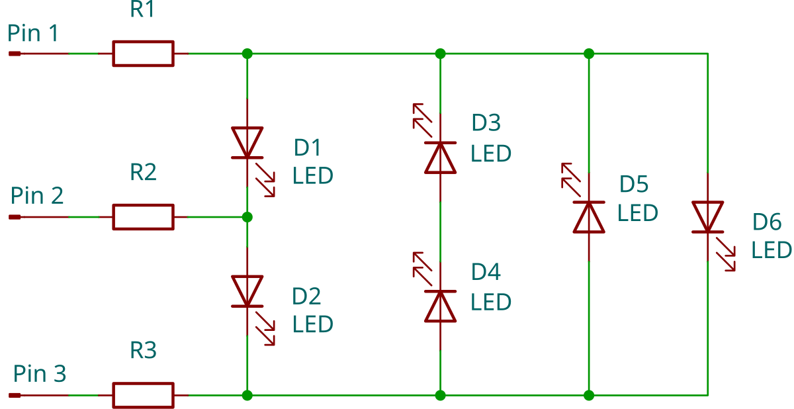

Applied Electronics II
Applied Electronics II focuses on the study of microcontrollers and microprocessors, their use in control systems and electronic instrumentation, and the design of programmable digital circuits. Students will acquire skills to implement, simulate, and optimize electronic systems based on microcontrollers, using programming languages such as C and specialized software and hardware tools.
Learning Objectives
- Design and implement digital electronic systems based on microcontrollers.
- Use modeling, simulation, and programming tools to solve electronic engineering problems.
- Identify and apply instructions and control structures in PIC16F8xx microcontrollers.
- Integrate sensors and actuators in digital control systems.
- Complete practical and laboratory projects demonstrating theoretical and technical mastery.
Course Outline
-
Topic 1: Microcontroller-Based Systems
- Introduction to Digital Electronics
- Boolean algebra and basic logic gates
- Integrated circuits and logic families
- Microprocessors vs. Microcontrollers
- Microcontroller components and fabrication technologies
- Internal architecture of PIC16F88, PIC16F886, PIC16F887
- Software and hardware tools
- Programming languages: Assembly, Basic, C
- Conditional and repetitive structures
- Peripheral and timer programming
- EEPROM memory management
- Analog ports and comparators
- ADC/DAC converters and PWM modulation
- Sensor and actuator integration
- Communication ports: parallel, serial
- UART, I2C, SPI protocols
- Interface with EEPROM memory and graphic displays
Topic 2: Mid-Range PIC Microcontrollers
Topic 3: Intermediate C Programming and Applications
Topic 4: Communication Interfaces and Serial Ports

Integrating GPU-accelerated AI tools into this Applied Electronics II course significantly enhances student learning by enabling real-time simulation of microcontroller architectures, faster compilation and debugging cycles, and intelligent optimization of embedded C code. Students can work with digital twins of PIC microcontrollers, emulate peripherals using high-speed GPU environments, and apply AI models to detect coding errors, predict timing issues, or optimize PWM, ADC, and communication routines. GPUs also enable advanced signal processing for sensor data, reinforcement learning for embedded control, and neural networks deployed directly onto microcontrollers. This approach bridges classical embedded systems education with modern AI-driven engineering practices.
Instructor

Mgr. Carlos López
Head of Mechatronics Engineering Laboratory